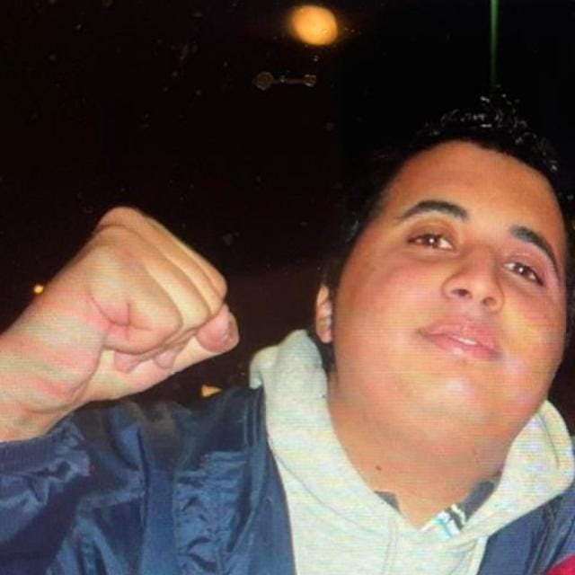

¿Te atreves a poner a prueba tu vocabulario y rapidez mental? Entonces no te pierdas el Pasapalabra de Adil, el famoso juego que pondrá a prueba si piensas lo que dices o si eres un bocachancla.
El juego es para niños, así que no te lo voy a explicar, espabilao.
No uses tildes y puedes usar mayúsculas o minúsculas indistintamente. Para confirmar tu palabra, puedes pulsar la tecla ENTER o hacer click en el botón.
El objetivo es completar el rosco de letras antes de que se acabe el tiempo.
Pero cuidado... por cada fallo tendrás que beber un chupito (sin parar el tiempo).
Si se te acaba el tiempo, harás 3 burpees por cada palabra que te falte.